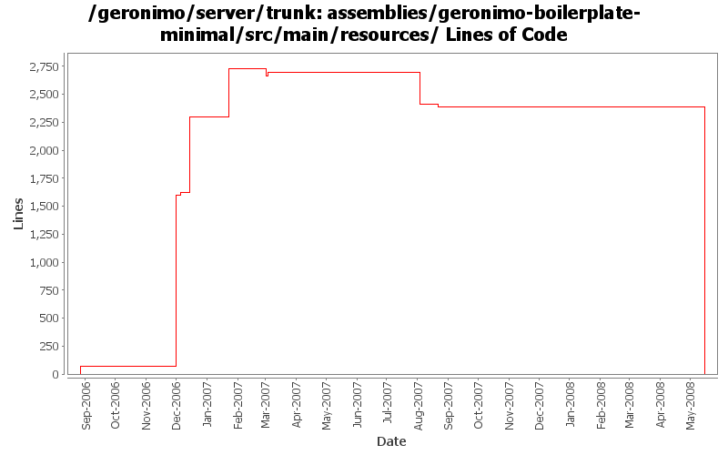

[root]/assemblies/geronimo-boilerplate-minimal/src/main/resources
 bin
(0 files, 0 lines)
bin
(0 files, 0 lines)
 var
(0 files, 0 lines)
var
(0 files, 0 lines)
 config
(0 files, 0 lines)
config
(0 files, 0 lines)
 log
(0 files, 0 lines)
log
(0 files, 0 lines)
 security
(0 files, 0 lines)
security
(0 files, 0 lines)
 keystores
(0 files, 0 lines)
keystores
(0 files, 0 lines)

| Author | Changes | Lines of Code | Lines per Change |
|---|---|---|---|
| Totals | 23 (100.0%) | 3492 (100.0%) | 151.8 |
| kevan | 11 (47.8%) | 3358 (96.2%) | 305.2 |
| jdillon | 12 (52.2%) | 134 (3.8%) | 11.1 |
Drop -minimal suffix on the boilerplate, since we only have one of these now, the suffix is meaningless
0 lines of code changed in 3 files:
Missed disclaimer updates in boilerplate-minimal
13 lines of code changed in 1 file:
GERONIMO-3364 Missed boilerplat license and notice files
603 lines of code changed in 2 files:
Upgrade to Castor 1.0.5
63 lines of code changed in 2 files:
Std props
1 lines of code changed in 1 file:
Remove mx4j more mx4j
1 lines of code changed in 2 files:
LICENSE/NOTICE/DISCLAIMER updates for M2
441 lines of code changed in 3 files:
Update trunk with license/notice files with latest license and notice information
679 lines of code changed in 2 files:
GERONIMO-2537 Add disclaimer for embedded incubator projects. Also, Tim McConnell pointed out that I had not merged two notice updates hadn not been merged onto trunk. Thanks Tim
22 lines of code changed in 1 file:
GERONIMO-2537 Merge from branches/1.2 onto trunk. I have not reviewed trunk license info. So, it's possible that there are already some deltas which should be reflected in license/notice files. This change updates the general LICENSE.txt and NOTICE.txt files. Note that I've expanded the notice/license files in the root of a source distribution. Also added required copyright to NOTICE.txt files. Note that minimal distributions have an overly broad license/notice files. Also, we have multiple copies of the same general license/notice files. Would be good to reduce these.
1600 lines of code changed in 2 files:
std props
2 lines of code changed in 2 files:
Add LICENSE.txt and NOTICE.txt, missed these when I dropped modules/scripts
67 lines of code changed in 2 files: